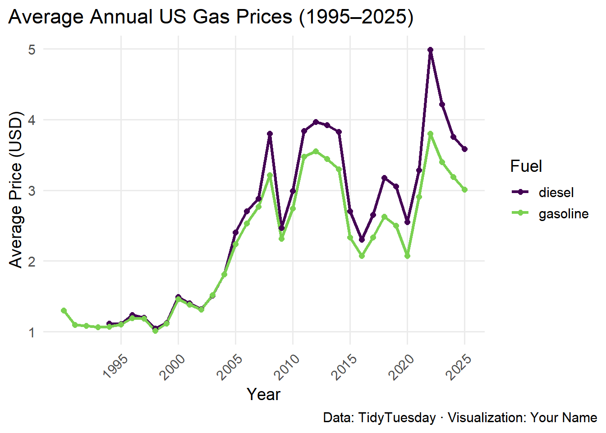
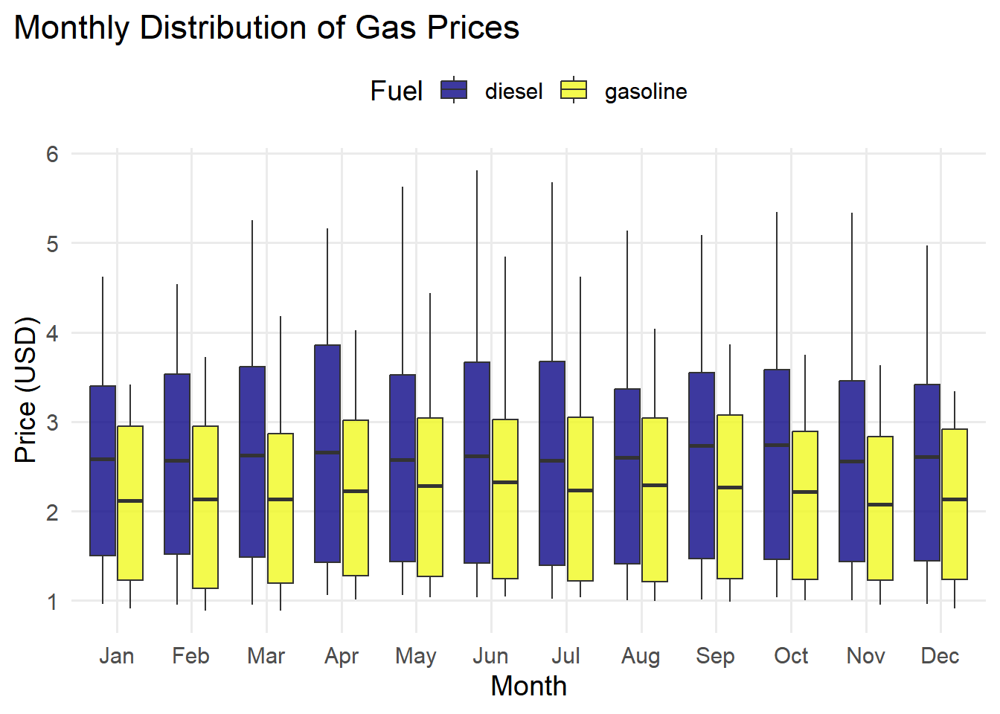
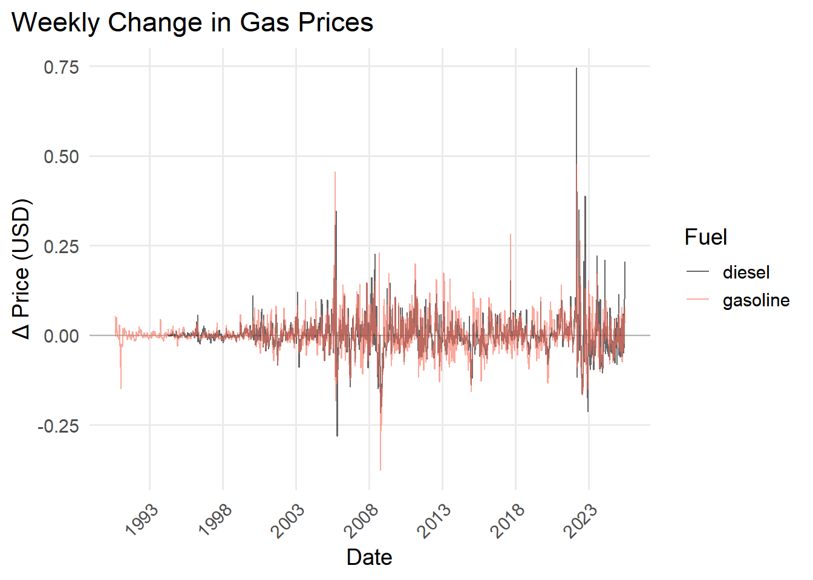
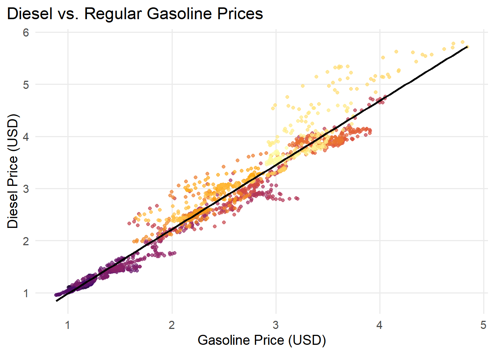

# # install everything in one shot
# install.packages(c(
# "tidyverse", # ggplot2, dplyr, readr, purrr, etc.
# "lubridate", # date–time helpers
# "scales", # axis & colour scaling helpers
# "viridis", # colour-blind-friendly palettes
# "patchwork" # ggplot2 plot layouts
# ))
library(tidyverse)
library(lubridate)
library(scales)
library(viridis)
library(patchwork)
theme_set(
theme_minimal(base_size = 14) +
theme(
plot.title.position = "plot",
plot.caption.position = "plot",
panel.grid.minor = element_blank()
)
)Weekly US Gas Prices
Introduction
In this notebook we explore weekly U.S. retail prices for diesel and regular gasoline from 1995 to 2025. We will:
- Trace long-term trends.
- Uncover seasonal patterns.
- Quantify volatility.
- Examine the relationship between diesel and gasoline prices.
We’ll use tidyverse for data wrangling and ggplot2 (with scales, viridis, and patchwork) for polished visualizations.
Setup
prices <- read_csv(
"https://raw.githubusercontent.com/rfordatascience/tidytuesday/main/data/2025/2025-07-01/weekly_gas_prices.csv",
col_types = cols(date = col_date(), price = col_double())
)
# Extract year & month, filter for diesel(all) & gasoline(regular/conventional)
simple <- prices %>%
mutate(
year = year(date),
month = month(date, label = TRUE, abbr = TRUE)
) %>%
filter(
(fuel == "diesel" & grade == "all") |
(fuel == "gasoline" & grade == "regular" & formulation == "conventional")
)annual <- simple %>%
group_by(year, fuel) %>%
summarize(avg_price = mean(price), .groups = "drop")
p1 <- ggplot(annual, aes(x = year, y = avg_price, color = fuel)) +
geom_line(size = 1.2) +
geom_point(size = 2) +
scale_color_viridis_d(option = "D", end = .8, name = "Fuel") +
scale_x_continuous(breaks = seq(1995, 2025, by = 5)) +
labs(
title = "Average Annual US Gas Prices\n(1995–2025)",
x = "Year",
y = "Average Price (USD)",
caption = "Data: TidyTuesday · Visualization: Joseph Nyajuoga"
) +
theme(
axis.text.x = element_text(angle = 45, hjust = 1)
)
p1
p2 <- ggplot(simple, aes(x = month, y = price, fill = fuel)) +
geom_boxplot(alpha = 0.8, outlier.shape = NA) +
scale_fill_viridis_d(option = "C", name = "Fuel") +
labs(
title = "Monthly Distribution of Gas Prices",
x = "Month",
y = "Price (USD)"
) +
theme(
legend.position = "top"
)
p2
diffs <- simple %>%
arrange(date) %>%
group_by(fuel) %>%
mutate(delta = price - lag(price)) %>%
drop_na(delta)
p3 <- ggplot(diffs, aes(x = date, y = delta, color = fuel)) +
geom_hline(yintercept = 0, color = "gray70") +
geom_line(alpha = 0.6) +
scale_color_viridis_d(option = "A", end = .7, name = "Fuel") +
scale_x_date(date_breaks = "5 years", date_labels = "%Y") +
labs(
title = "Weekly Change in Gas Prices",
x = "Date",
y = "Δ Price (USD)"
) +
theme(
axis.text.x = element_text(angle = 45, hjust = 1)
)
p3
wide <- simple %>%
select(date, fuel, price) %>%
pivot_wider(names_from = fuel, values_from = price)
p4 <- ggplot(wide, aes(x = gasoline, y = diesel, color = date)) +
geom_point(alpha = 0.7) +
scale_color_viridis_c(option = "B", name = "Date") +
geom_smooth(method = "lm", color = "black", se = FALSE) +
labs(
title = "Diesel vs. Regular Gasoline Prices",
x = "Gasoline Price (USD)",
y = "Diesel Price (USD)"
) +
theme(legend.position = "none")
p4
# 1) Build the 2×2 grid, collect all legends, and tell it to generate new tags:
combined <- (p1 + p2 + p3 + p4) +
plot_layout(
ncol = 2,
nrow = 2,
guides = "collect",
tag_level = "new" # <-- must be "new" (or "keep"), not "A"
) &
theme(
#legend.position = "none",
plot.margin = margin(10, 10, 10, 10),
plot.tag = element_text(face = "bold", size = 14)
)
# 2) Add your title/subtitle/caption *and* specify tag_levels="A":
final_plot <- combined +
plot_annotation(
title = "Weekly US Gas Prices: Trends, Seasonality & Volatility",
subtitle = "Diesel vs. Regular Gasoline, 1995–2025",
caption = "Data: TidyTuesday · Analysis: Joseph Nyajuoga",
tag_levels = "A" # <-- starts tags at A, B, C, D...
) &
theme(
plot.title = element_text(size = 18, face = "bold"),
plot.subtitle = element_text(size = 14),
plot.caption = element_text(size = 10)
)
# 3) Print it
final_plot